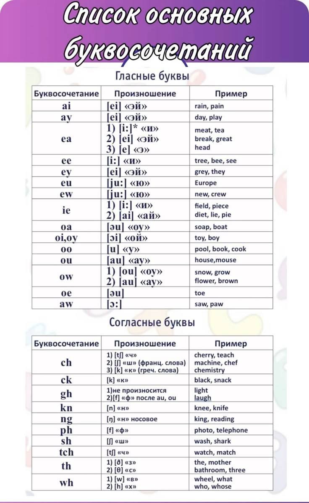

English · чтение
Как читается английский.Чтобы смотреть на слово и понимать, как оно звучит
Английское письмо выглядит нелогичным только снаружи. Внутри есть система: как читать букву, подсказывают соседние буквы. Эта страница собрана так, чтобы её можно было открывать по частям и возвращаться к ней весь курс.
→Гласные: почему this это «зис», а nice это «найс».
→Согласные и буквосочетания: ch, sh, th, ea, oo, ow и остальные.
→Немые буквы, окончания слов и что делать с незнакомым словом.
Как этим пользоваться. Не надо читать всё подряд за один раз. Берите по одному разделу, сразу решайте упражнение под ним и возвращайтесь через день. Правило чтения работает примерно в двух словах из трёх, и этого достаточно, чтобы перестать спрашивать про каждое новое слово.
правило
01Имена букв
Сначала то, на чём держится половина правил: у каждой буквы есть имя. Его вы произносите, когда называете букву отдельно, и к этому имени мы будем возвращаться дальше.
Aэй
Bби
Cси
Dди
Eи
Fэф
Gджи
Hэйч
Iай
Jджей
Kкей
Lэл
Mэм
Nэн
Oоу
Pпи
Qкью
Rа
Sэс
Tти
Uю
Vви
Wдабл-ю
Xэкс
Yуай
Zзед
Гласных букв всего пять: a, e, i, o, u. Шестая, y, работает то гласной, то согласной. Все правила ниже про них. Про z: «зед» это британский вариант, американцы говорят «зи».
правило
02Гласные: четыре случая
Одна и та же буква читается по-разному, и это не произвол. Как её читать, подсказывает то, что стоит после неё.
Случай 1. Закрытый слог: после гласной согласная
Слог кончается на согласную, и гласная читается коротко и резко.
a
э
Max, bag, happy, cat
рот шире, чем в русском «э»
e
э
pen, ten, yes, red
обычное «э»
i
и
this, is, big, sister
очень коротко
o
о
hot, not, coffee, box
коротко
u
а
bus, but, husband, cup
не «у», а «а»
Случай 2. Открытый слог: слог кончается на саму гласную
Так бывает в коротких словах вроде he, no, my и там, где в конце стоит немая e. Тогда гласная называет своё имя: то самое, из раздела 01.
a
эй
name, Kate, late, place
как буква A
e
и
he, she, we, these
как буква E
i
ай
nice, time, five, like
как буква I
o
оу
no, go, home, phone
как буква O
u
ю
student, music, use
как буква U
Немая e на конце
Буква e в конце слова сама не читается. Её работа другая: она заставляет гласную перед ней назвать своё имя. Одна буква меняет слово целиком.
hat
→
hate
хэт - хэйт
kit
→
kite
кит - кайт
not
→
note
нот - ноут
cut
→
cute
кат - кьют
Tim
→
time
тим - тайм
Случай 3. Гласная плюс r
Если после гласной стоит r, звук становится длинным, а сама r в британском варианте не произносится.
ar
а-а
car, park, bar, star
долгое «а»
er, ir, ur
ё-ё
her, first, turn, girl
звук между «ё» и «э», губы не вытягиваем
or
о-о
for, sport, more, short
долгое «о»
Случай 4. Гласная плюс r плюс e
Самый редкий, но его стоит знать: после гласной идёт r, а за ней снова гласная. Звук получается с лёгким призвуком «э» на конце.
are
эа
care, share, parents
не «кэр», а мягче
ere, ear
иэ
here, near, year
«хиэ», «ниэ»
ire
айэ
fire, tired
«файэ», «тайэд»
ore
о-о
more, store, before
то же долгое «о»
ure
юэ
sure, pure
«шуэ», «пьюэ»
Буква y на конце
В коротком слове из одного слога y читается «ай»: my, why, by, fly, try. В длинном слове на конце она превращается в «и»: happy, sorry, busy, city, family.
Честно про исключения. Правило работает примерно в двух словах из трёх, и это уже огромная экономия сил. Но есть слова, которые его нарушают, и их просто запоминают: have, give, live, come, some, one, love, friend, done. Немая e в них есть, а гласная всё равно короткая.
Пары, на которых это слышно
Прочитайте пары вслух, одну за другой. Разница между левым и правым словом и есть всё правило.
практика
03Как прочитать гласную
Посмотрите, что стоит после гласной, и выберите звук.
правило
04Согласные: что звучит не по-русски
Большинство согласных читаются примерно как у нас. Разобраться надо с шестью звуками и с двумя привычками, которые мы приносим из русского.
Шесть звуков, которых в русском нет
th
с
think, three, thank you
язык между зубами, голос не включаем
th
з
this, that, they, mother
то же самое, но с голосом
w
у
we, what, why, where
губы трубочкой, не «в»
r
р
Russia, really, friend
язык не дрожит и нёба не касается
h
х
hello, hot, happy, he
лёгкий выдох, почти шёпот
ng
н
morning, English, going
в нос, без «г» на конце
Про th отдельно. Это одна пара букв и два разных звука: в think глухой, как «с», в this звонкий, как «з». Язык в обоих случаях выходит между зубами. Не «зис» и не «дис». Скажите три раза подряд: this, this is, this is my friend.
Две привычки из русского, которые мешают
Не оглушайте конец слова. По-русски «клуб» мы произносим как «клуп», и никто не замечает. В английском от этого меняется слово целиком.
bed
bet
кровать
а не «ставка»
bad
bat
плохой
а не «летучая мышь»
dog
dock
собака
а не «причал»
his
hiss
его
а не «шипеть»
Не смягчайте согласную перед i и e. По-русски «ти» звучит мягко, почти «тьи». По-английски согласная остаётся твёрдой: tea, see, need, big, sister. Звучит непривычно сухо, и это правильно.
правило
05Буквы, которые читаются не так, как пишутся
Дальше идут пары букв, которые дают один звук, и три буквы, которые меняют звук в зависимости от соседа.
Две буквы, один звук
ch
ч
coach, teacher, chair
sh
ш
she, shop, fish
ph
ф
photographer, phone
две буквы, один звук
ck
к
black, kick, snack
wh
у
what, where, why, white
h не читается
kn
н
know, knife, knee
k молчит
wr
р
write, wrong
w молчит
qu
кв
question, quick, quiet
после q всегда идёт u
Три буквы с двойным поведением
Эти читаются по-разному, и зависит это от того, какая буква идёт следом. Правило простое: перед e, i, y звук становится мягче.
c
с
перед e, i, y
nice, city, cinema
c
к
в остальных случаях
coach, cold, cup
g
дж
чаще всего перед e, i, y
page, manager, gym
g
г
в остальных случаях
good, big, go
s
з
между гласными и в конце
busy, his, is, please
s
с
в начале слова
sister, student, say
И снова про исключения. give, get, girl читаются с твёрдым «г», хотя после g стоит e или i. Таких слов немного, и они самые частые, так что запомнятся сами.
практика
06Как читается согласная
Смотрите на букву и на то, что стоит рядом с ней.
шпаргалка
07Таблица буквосочетаний
Вся картина одним экраном. Можно сохранить к себе в телефон и подглядывать, пока не запомнится. Ниже мы разберём эту таблицу по частям, с примерами и упражнениями.

В квадратных скобках стоит значок звука, рядом с ним русская запись. Значки запоминать не нужно, смотрите на русскую подсказку и на примеры.
Две строчки в таблице записаны очень коротко. wh подписано как «в», но это не русское «в»: губы трубочкой, получается ближе к «у» - what, where. И ew не всегда «ю»: после r и l это просто «у» - crew, flew. Ниже оба случая разобраны подробнее.
правило
08Гласные буквосочетания
Две гласные рядом почти всегда дают один звук. Главное правило простое: первая буква называет своё имя, вторая молчит. Работает не везде, но с него удобно начинать.
Дают «эй»
ai
эй
rain, pain, wait, train
в середине слова
ay
эй
day, play, say, may
в конце слова
ey
эй
grey, they, hey
в коротком слове
Пара ai и ay это один и тот же звук, просто в середине слова пишут ai, а в конце ay. В длинном слове ey на конце превращается в «и»: money, honey, key.
Дают «и»
ee
и
tree, see, week, green
всегда долгое «и»
ea
и
meat, tea, read, please
самый частый вариант
ie
и
field, piece, believe
в середине слова
Те же буквы, но другой звук
Эти три сочетания читаются двумя способами, и это надо знать заранее, чтобы не удивляться.
ea
э
head, bread, ready, breakfast
короткое «э», слов немного
ea
эй
break, great, steak
всего несколько слов
ie
ай
pie, lie, die, tie
в конце короткого слова
ow
оу
snow, know, window, yellow
ow
ау
now, how, town, brown
оба варианта одинаково частые
Остальные
oa
оу
boat, soap, coat, road
oe
оу
toe, goes
слов мало
oi, oy
ой
toy, boy, coin, voice
oy чаще в конце слова
ou
ау
house, mouse, about, out
oo
у
book, cook, good, look
короткое, обычно перед k
oo
у-у
food, school, moon, soon
долгое
eu, ew
ю
Europe, new, few, knew
ew
у
crew, flew, blew
после r и l
aw, au
о
saw, paw, autumn, because
долгое «о»
Где ou ведёт себя иначе. В you и soup это «у», а в young, country, cousin короткое «а». Это те самые слова из третьего десятка, которые запоминаются сами, потому что встречаются каждый день.
практика
09Две гласные рядом
Выберите, как звучит выделенная пара букв.
правило
10Согласные буквосочетания
Часть из них уже была в разделе 05, здесь они собраны вместе и с теми случаями, когда сочетание читается не так, как обычно.
ch
ч
cherry, teach, chair
обычный вариант
ch
ш
machine, chef, Michelle
в словах, пришедших из французского
ch
к
school, chemistry, Christmas
в словах из греческого
tch
ч
watch, match, kitchen
t не читается
sh
ш
wash, shark, shop
th
з
the, mother, this, they
с голосом
th
с
bathroom, three, think
без голоса
ph
ф
photo, telephone, graph
ck
к
black, snack, kick
ng
н
king, reading, long
носовое, без «г»
kn
н
knee, knife, know
k молчит
wr
р
write, wrong, wrist
w молчит
wh
у
wheel, what, where, when
губы трубочкой
wh
х
who, whose, whole
перед o наоборот: молчит w
gh
молчит
light, night, high, through
не читается совсем
gh
ф
laugh, enough, cough
после au и ou
Как запомнить три варианта ch. «Ч» это обычное английское слово. «Ш» и «к» встречаются в словах, которые английский взял у других языков, и таких слов немного: machine, chef, school, chemistry, character, stomach. Проще выучить этот короткий список, чем правило.
практика
11Две согласные рядом
Здесь важно не само сочетание, а слово, в котором оно стоит.
правило
12Буквы, которые пишут, но не читают
Их называют немыми. Они остались от старого произношения: когда-то читались, потом язык изменился, а написание осталось.
k
перед n
know, knife, knee, knock
«ноу», «найф»
w
перед r
write, wrong, wrist
«райт», «ронг»
w
в середине
answer, two, sword
«а-анса», «ту»
b
после m
climb, comb, thumb, lamb
«клайм», «коум»
l
перед k, f, m
talk, walk, half, calm
«то-ок», «уо-ок»
t
в середине
listen, castle, often, whistle
«лисн», «ка-асл»
h
в начале
hour, honest, honour
«ауэ», «онист»
gh
после гласной
light, night, right, though
«лайт», «найт»
e
в конце
name, nice, home, large
открывает слог, сама молчит
Отдельно про clothes и months. В живой речи их произносят почти как close и mons: три согласных подряд не выговариваются, и носители сами упрощают. Так что это не ваша ошибка, а норма.
правило
13Окончания длинных слов
Длинное слово пугает ровно до того момента, пока не узнаёшь его хвост. Этих хвостов немного, и они повторяются в сотнях слов.
-tion
шн
station, information, education
«стэйшн», «инфомэйшн»
-sion
жн
decision, television, vision
после гласной мягче
-ssion
шн
discussion, passion, mission
после согласной
-ture
чэ
picture, future, nature
«пикчэ», «фьючэ»
-ous
эс
famous, nervous, delicious
«фэймэс», не «оус»
-age
идж
message, village, manage
«мэсидж»
-ate
эйт
chocolate, private, create
у глаголов «эйт», у слов-признаков «эт»
-le
л
table, little, people, apple
«тэйбл», «литл»
-ful
фул
beautiful, useful, careful
без ударения, коротко
-ly
ли
really, usually, friendly
Главное про длинные слова. В английском ударение почти всегда ближе к началу, а хвост проглатывается. Interesting это «интрэстинг», а не «интэрэстинг». Comfortable это «камфтэбл». Если тянуть каждый слог одинаково, слово звучит по-русски.
практика
14Немые буквы и окончания
Выберите, как звучит выделенная часть слова.
правило
15Слова, которые живут не по правилам
Их придётся запомнить, но есть хорошая новость: это самые частые слова языка, поэтому они запоминаются сами, за пару недель.
вслух
16Прочитайте сами, потом проверьте
Сначала скажите слово вслух, и только потом нажимайте. Так упражнение и работает: если сразу открывать ответ, вы просто читаете чужую запись.
итог
17Что делать с незнакомым словом
Четыре шага, по которым можно пройти с любым словом, которое встретилось впервые.
- Посмотрите на хвост: есть ли знакомое окончание из раздела 13 и нет ли немой буквы из раздела 12.
- Найдите пары гласных: ea, oo, ai, ow и остальные из раздела 08. Две гласные рядом дают один звук.
- Для одиночной гласной посмотрите, что стоит после неё: согласная, пустота, r или немая e. Это раздел 02.
- Прочитайте вслух с ударением ближе к началу слова. Если получилось похоже на знакомое слово, скорее всего вы прочитали верно.
Если слово всё равно не поддаётся, его можно послушать. В словаре Кембриджа у каждого слова есть кнопка с динамиком, британский и американский вариант. Это надёжнее, чем угадывать.
dictionary.cambridge.org
вбиваете слово, нажимаете динамик рядом с UK и слушаете